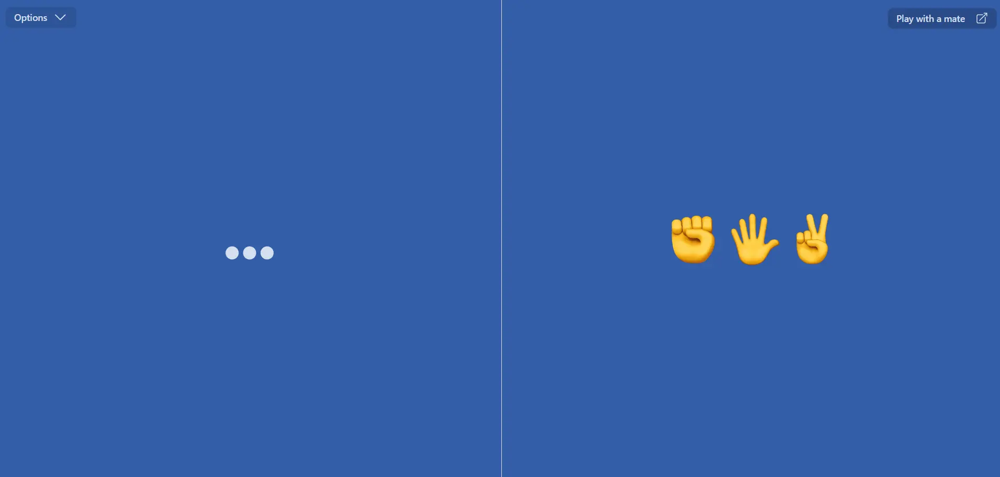
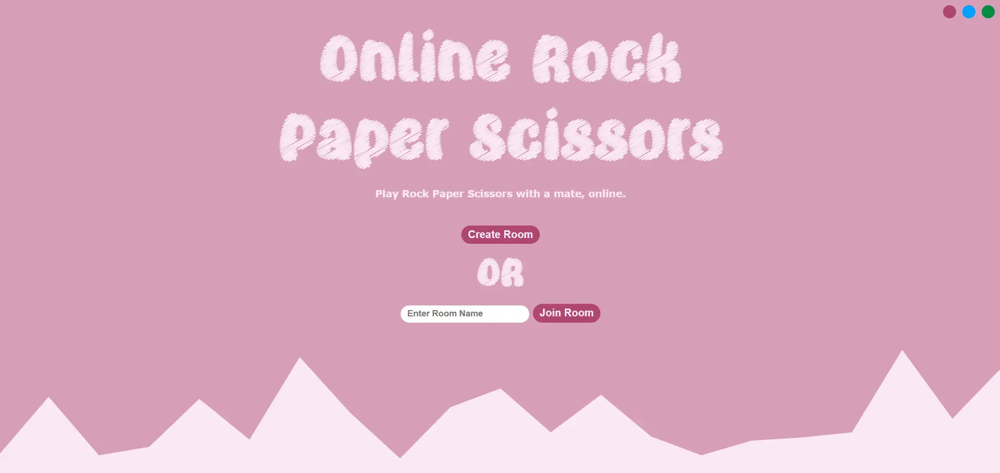

Rock Paper Scissors
Play rock paper scissors against your device's brain, or your friend's power.
The offline version has an amazing feature that you can play the game even when you don't have any internet connection, to activate it you only need to visit the site once! Also, game results is stored infinitely.


Technical side
Technologies used to create this project are as followed:
Offline version
HTML
CSS
TailwindCss
daisyUI
JS
Online version
HTML
CSS
JS
Django
Notes
In the online version, I've used Fetch API to communicate between browser and server as fast as possible, although using websocket is definitely a better choice, I wanted to to know how much can I push the boundaries of the Fetch API. It was worth it! But next time I go with websocket for sure.